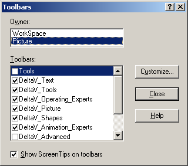
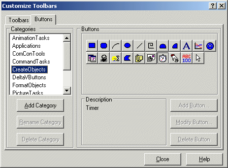

Modifying existing toolbars
The toolbars in DeltaV Operate can be customized to make them more useful for your configuration needs. You can modify existing toolbars by adding or removing buttons or by changing the order of buttons on a toolbar. You can create new toolbars with your own selection of the standard buttons. The most common ways that users customize toolbars is to create new toolbars with their own selection of the buttons they use most often or to simply remove unused buttons from existing toolbars. For example, if you set up a workstation dedicated to creating pictures and Dynamos, you may want to remove the New Schedule button from the Utilities toolbar.
Advanced users can create entirely new buttons or modify existing Visual Basic scripts associated with standard buttons to customize the buttons for their own applications.
Removing a Button from a Toolbar
Removing a button from a toolbar is very easy. First, select Toolbars from the WorkSpace menu. (Make sure the toolbar you wish to modify appears somewhere on the screen. If it isn't showing, select it from the list of available toolbars under WorkSpace or Picture.) Then click the Customize button on the Toolbars dialog.

Clicking Customize makes all the toolbars modifiable. To remove a button from any toolbar, click the button on the actual toolbar as it appears on the Operate desktop and drag it off the toolbar. When you click the button to remove it, a small plus sign appears next to the button.
Rearranging Toolbar Buttons
To change the order of buttons on an existing toolbar, follow the same basic procedure as described under Removing a Button From a Toolbar. Instead of dragging the button off the toolbar, simply move it to a new position. Note that you cannot drag a button from one toolbar to another.
Adding an Existing Button to a Toolbar
To add an existing button to a toolbar, open the Toolbars dialog box by selecting Toolbars from the WorkSpace menu. Then click Customize and select the Buttons tab. All the standard DeltaV buttons exist in one or more of the listed categories of buttons.

Click the various categories until you find the button you wish to add. The buttons for each category show on the right side of the dialog box. When you click a button, a brief description appears in the Description field. To add the button to an existing toolbar, simply drag it from the Buttons page of the dialog box to the desired toolbar on your desktop. Note that only a copy of the button is moved; the original stays on the dialog box.
The button categories cannot be renamed or deleted. Likewise, the buttons in these categories cannot be modified or deleted. However, you can modify any button you add to a toolbar. DeltaV Operate treats the added button as a copy of the original and lets you modify the new button in the toolbar with the Visual Basic Editor. Any changes to the copy do not affect the original.
Enabling Toolbar Docking
In addition to adding, removing, and arranging buttons, you can customize a toolbar by enabling or disabling a toolbar's docking option. When enabled, this option lets you dock a toolbar by dragging it to any edge of the screen. To keep the toolbar floating regardless of its screen position, you can disable the option.
Resetting Toolbars
You can restore any standard DeltaV Operate toolbar to its default state using the Reset button. Typically, these toolbars should be reset if you have customized the standard toolbars and you want to undo these changes. When you reset a toolbar, DeltaV Operate:
Deletes any custom buttons you have added.
Adds any standard buttons you have deleted.
Resets the toolbar's docking option back to its default state. This means if you reset a toolbar that has the docking option disabled, DeltaV Operate enables the option.
Moves the toolbar back to its default screen position. Consequently, if you reset a floating toolbar that is docked by default the toolbar, DeltaV Operate docks the toolbar when you reset it.
Resetting a standard toolbar does not affect any custom toolbar you have created.
Editing the Script of a Toolbar Button
You can edit the script of a toolbar button to customize it for your own application. First, make the toolbars customizable by selecting Toolbars from the WorkSpace menu and clicking the Customize button on the Toolbars dialog. Then, on your desktop, double-click the toolbar button you wish to customize. This opens the script associated with the button in the Microsoft Visual Basic Editor. Any changes you make are for the copy of the button on your desktop toolbar. The original script for the standard button is not modified.